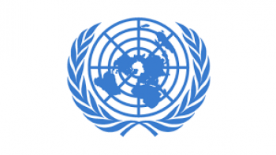
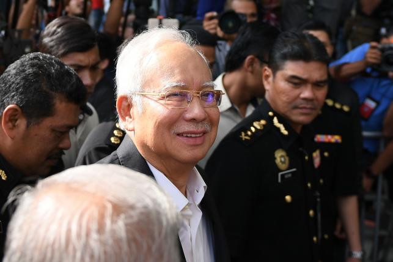

Breaking News


New UN envoy to travel to Myanmar
AFP . United Nations | Update: 11:29, May 24, 2018
0Like

The new United Nations envoy for Myanmar will pay a first visit to Naypyidaw next month for talks on the Rohingya refugee crisis, UN sources said Wednesday. Christine Schraner Burgener, who was Switzerland’s ambassador to Germany before her appointment last month, will hold a first round of meetings in June following a Security Council visit to Myanmar. At least 700,000 Muslim Rohingya have been driven out of Myanmar since an army operation was launched in Rakhine state in August. Britain, France, the United States and the UN have described the campaign as ethnic cleansing. The Rohingya refugees are living in crowded camps in Bangladesh, but the United Nations is calling for their safe return to their homes in Rakhine. Schraner Burgener, who also served as Swiss ambassador to Thailand from 2009 to 2015, was appointed in April following a monthslong search for an envoy who would be acceptable to Myanmar’s government. Myanmar has refused to allow a fact-finding mission set up by the UN Human Rights Council to enter the country, and has barred UN rights expert Yanghee Lee. A UN source did not give specific dates for the visit, but said the government had agreed to it. Schraner Burgener met Tuesday with UN Secretary-General Antonio Guterres to discuss the Rohingya crisis. The monsoon season is putting up to 200,000 Rohingya refugees at risk from flooding and landslides in the camps of Cox’s Bazar, the United Nations has warned. Myanmar has said the military operation in Rakhine is aimed at rooting out extremists, and maintains that the Rohingya are foreigners with no citizenship rights.
Malaysia’s Najib quizzed for second time over graft claims
AFP. Putrajaya, Malaysia | Update: 11:35, May 24, 2018
0Like

Former Malaysian leader Najib Razak arrived at the anti-graft agency Thursday to be questioned for a second time this week over a multi-billion-dollar corruption scandal following his shock election loss. Najib's coalition suffered a defeat at the May 9 poll which ended their six-decade hold on power, beaten by a reformist alliance led by Mahathir Mohamad. Mahathir, who first served as premier from 1981-2003 and came out of retirement aged 92 to take on Najib, campaigned on claims that the former leader and his cronies looted sovereign wealth fund 1MDB. Billions of dollars were allegedly stolen from the fund in a sophisticated fraud, and used to buy everything from artworks to high-end real estate. Najib pushed through a huge media scrum at the Malaysian Anti-Corruption Commission (MACC) headquarters in the administrative capital of Putrajaya as he arrived to be quizzed about 1MDB money allegedly ending up in his personal bank accounts. Najib is being questioned by the anti-corruption body over SRC International, an energy company that was originally a subsidiary of 1MDB.
Trump to decide about Kim summit next week
AFP . Washington | Update: 09:26, May 24, 2018
0Like

US president Donald Trump said Wednesday the fate of a landmark summit with North Korea’s Kim Jong Un will be decided “next week,” as aides travelled to Singapore on a preparatory mission. “On Singapore we’ll see. It could very well happen,” Trump said of the on-again-off-again 12 June meeting, which has been as keenly teased as any of his “The Apprentice” season finales. “Whatever it is, we’ll know next week.” And in an interview to air Thursday morning on one of the president’s preferred programmes, Fox & Friends, he said “there’s a good chance” the talks would take place. “If that happens, it would be a great thing for North Korea. Listen, it would be a great thing for the world, so we’ll see what happens,” Trump said in the interview, according to excerpts released by Fox. Hand-picked aides—including deputy chief of staff Joe Hagin and deputy national security adviser Mira Ricardel—are travelling to the Southeast Asian city state designated to host the summit, officials said. They are expected to meet their North Korean counterparts and iron out details of the meeting. The top diplomat from Pyongyang’s traditional ally China on Wednesday expressed hope for a successful meeting, as planned. “If you want to solve the moment now is the time, if you want peace now is the time, if you want to make history now is the time,” Chinese foreign minister Wang Yi said in Washington, alongside his American counterpart Mike Pompeo. The US Secretary of State said whether the summit goes ahead is now up to North Korea. Asked in a hearing of the House Foreign Affairs Committee if the summit will take place, Pompeo replied: “That decision will ultimately be up to Chairman Kim.” “He asked for the meeting, the president agreed to meet with him,” Pompeo said. “I’m very hopeful that that meeting will take place.” His remarks reflect an effort to perhaps lay the groundwork for blame should the talks fail. Ostensibly the Trump-Kim talks will be about peace on the Korean peninsula and North Korea’s nuclear and ballistic weapons. But even before talk of test freezes, decommissioning or inspections, Washington and Pyongyang are engaged in a public relations battle. As part of a charm offensive, North Korea invited some foreign journalists to witness the slated destruction of the isolated regime’s nuclear test site. The gesture, which experts agree would do little to curb North Korea’s long-term nuclear capabilities, is meant to signal that the regime is serious about change. Pyongyang said it planned to “completely” destroy the Punggye-ri facility in the country’s northeast when it made the surprise announcement earlier this month. Washington and Seoul welcomed the move.


© All Rights Reserved
Prothom Alo 1998 - 2018
Editor & publisher: Matiur Rahman.
CA Bhaban, 100 Kazi Nazrul Islam avenue, Karwan Bazar, Dhaka 1215
Phone: 8180078-81, Fax: 9130496, E-mail: info@prothom-alo.info
Reproduction of any content,
news or article published on this website is
strictly prohibited.Privacy